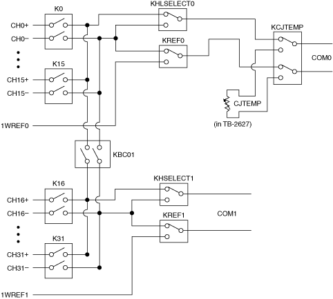

NI PXI/PXIe-2527 Relay Replacement
The NI PXI/PXIe-2527 (NI 2527) uses electromechanical armature relays.
Refer to the following tables for information about ordering replacement relays.
| Relay Manufacturer |
Part Number |
| AXICOM (Tyco Electronics) |
IM42PGR (5-1462039-7) |
| Relay Kit |
Part Number |
| National Instruments (10 relays) |
782051-01 |
Complete the following sets of steps to disassemble your module, replace a failed relay, and reassemble your module.
- Ground yourself using a grounding strap or a ground connected to your PXI chassis.
 |
Note Properly grounding yourself prevents damage to your module from electrostatic discharge. |
- Refer to the following figure and table to locate the relay you want to replace.
NI 2527 Hardware Diagram

|
Note Use the numbers printed on the board to verify the revision letter of the NI 2527. (Revision B = ASSY192245B-01; Revision A = ASSY192245A-01.) Use the revision letter to determine the correct reference designator for the relay you want to replace. |
| Relay Name |
Reference Designator
(Revision B) |
Reference Designator
(Revision A) |
| k0 |
k0 |
k33 |
| k1 |
k1 |
k35 |
| k2 |
k2 |
k30 |
| k3 |
k3 |
k38 |
| k4 |
k4 |
k34 |
| k5 |
k5 |
k29 |
| k6 |
k6 |
k25 |
| k7 |
k7 |
k24 |
| k8 |
k8 |
k21 |
| k9 |
k9 |
k20 |
| k10 |
k10 |
k17 |
| k11 |
k11 |
k31 |
| k12 |
k12 |
k16 |
| k13 |
k13 |
k37 |
| k14 |
k14 |
k36 |
| k15 |
k15 |
k26 |
| k16 |
k16 |
k13 |
| k17 |
k17 |
k22 |
| k18 |
k18 |
k6 |
| k19 |
k19 |
k18 |
| k20 |
k20 |
k14 |
| k21 |
k21 |
k11 |
| k22 |
k22 |
k8 |
| k23 |
k23 |
k12 |
| k24 |
k24 |
k9 |
| k25 |
k25 |
k7 |
| k26 |
k26 |
k5 |
| k27 |
k27 |
k10 |
| k28 |
k28 |
k1 |
| k29 |
k29 |
k3 |
| k30 |
k30 |
k4 |
| k31 |
k31 |
k2 |
| kbc01 |
k32 |
k32 |
| khlselect0 |
k33 |
k28 |
| kref0 |
k34 |
k27 |
| khlselect1 |
k35 |
k23 |
| kref1 |
k36 |
k19 |
| kcjtemp |
k37 |
k15 |
- Locate the assembly and serial number labels on the board with the relay you want to replace. White labels indicate the board was assembled using lead solder (Sn 63 Pb 37). Green labels indicate the board was assembled using lead-free solder (Sn 96.5 Ag 3.0 Cu 0.5). Lead-free assemblies have assembly numbers ending in L. The different label types are shown in the following figure.

|
Note NI recommends using lead-free solder for relay replacement on lead-free assemblies, and lead solder for relay replacement on lead assemblies. |
 |
Caution Do not rework lead assemblies using a lead-free work station. Lead solder from the unit could contaminate the station. |
|
Caution If a lead-free assembly is reworked with lead solder, label the assembly to indicate this condition. This rework can prevent the same unit from being reworked later on a lead-free solder station, because it could contaminate the station. |
Make sure you have the following items:
- Temperature-regulated soldering iron set to 316 °C (600 °F) for lead solder rework or 371 °C (700 °F) for lead-free solder rework
- 63/37 Tin/Lead solder (flux core) for lead solder rework
- 96.5/3.0/0.5 Tin/Silver/Copper solder (flux core) for lead-free solder rework
- Solder wick
- Fine pick
- Isopropyl alcohol
- Cotton swabs
If you have a surface mount rework station, replace the relay as you would any other surface mount part. Otherwise, complete the following steps to replace the relay:
- Use the soldering iron and solder wick to remove as much solder from the relay pads as possible. Do not leave the soldering iron on any lead for more than 5 seconds.
|
Note If it is necessary to reapply the soldering iron to the pad, allow the connection to cool completely before reapplying the soldering iron. |
- Apply heat to the pads one at a time, and use the pick to gently pry the relay pins from the pads. Make sure that the solder is molten before prying.
|
Caution Using excessive force on a soldered pad can result in lifting the PCB trace and ruining the board. |
- Remove the relay.
- Clean the pads with isopropyl alcohol and cotton swabs.
- Place the new relay on the PCB pads and solder.
- Remove the excess flux with isopropyl alcohol and cotton swabs.
|
Caution Do not use flux remover to clean the board after relay replacement.
|
Reassemble the Module
Complete the Disassemble the Module steps in reverse order to reassemble your module.
 |
Tip In NI-SWITCH 3.1 or later, you can use the Switch Soft Front Panel to reset the relay count after you have replaced a failed relay. Refer to the Switch Soft Front Panel Help for more information. |